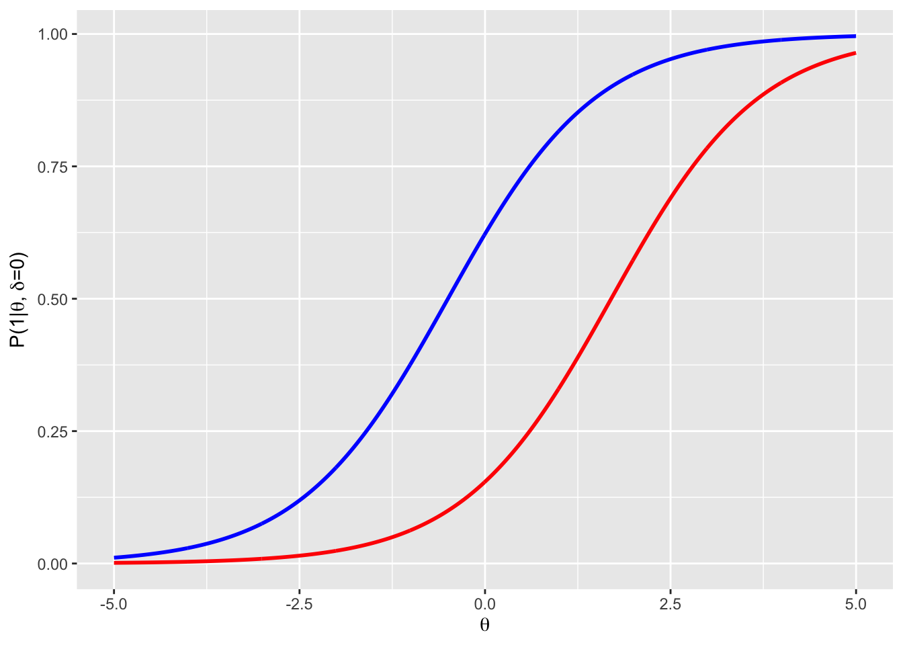

2 Einführung
2.1 Rasch-Modellierung
Bei vielen Test geht es um die Frage, ob ein Probant eine bestimmte Fähigkeit besitzt und damit eine Aufgabe richtig lösen kann. Diese Fähigkeit, die man messen möchte, ist aber meist nicht direkt zugänglich. Sie ist latent. Der Zugang zu dieser Fähigkeit kann also nur über Aufgaben oder Fragen erfolgen, die der Probant beantwortet und in deren Beantwortung sich die latente Fähigkeit zeigt.
Die Wahrscheinlichkeit, dass ein Proband eine Aufgabe richtig lösen kann, hängt sowohl von dessen Fähigkeit als auch von der Schwierigkeit der Aufgabe ab. Eine Aufgabe, die sehr oft richtig gelöst wird, könnte z.B. sehr einfach sein. Die Probanden könnten aber auch alle eine sehr hohe Fähigkeit haben, die ihnen erlaubt, die Aufgabe erfolgreich zu bearbeiten. Beide Punkte sind also auf den ersten Blick nicht voneinander zu trennen. Die Rasch-Modellierung (benannt nach dem dänischen Statistiker Georg Rasch (1901–1980)) löst dieses Problem. Das Modell beschreibt wie wahrscheinlich es ist, dass ein Proband \(n\) ein Item \(i\) richtig löst in Abhängigkeit
- eines individuellen Personen- oder Personenfähigkeitsparameters \(\theta_n\) für jeden Probanden, welcher das Fähigkeitsausmaß des Probanden \(n\) beschreibt und
- eines Aufgaben- oder Aufgabenschwierigkeitsparameters \(\delta_i\), der ist den Schwierigkeitsgrad der Aufgabe \(i\) beschreibt.
Man erhält also aus einem Datensatz von richtigen oder falschen Antworten (ordinale Daten) der Pronden zu verschiednen Aufgaben ein kontinuierliches metrisches Maß in Form der Personenfähigkeitsparameter \(\theta_n\) und der Aufgabenschwierigkeitsparameter \(\delta_i\). Prinzipiell ist dieses Modell nicht auf dichotom zu bewertenden Aufgaben beschränkt. Auch likert-skalierte Items sind z.B. möglich, sollen aber nicht Gegenstand dieses Buches sein.
Die Modellannahmen lauten wie folgt:
Das Maß der Fähigkeit jedes Probanden ist ausschließlich durch den Personenfähigkeitsparameter charakterisiert. Das heißt, dass es keine anderen Einflussfaktoren gibt und ein sog. eindimensionales Modell berechnet wird.
Die Schwierigkeit der einzelnen Aufgaben ist ausschließlich durch den Aufgabenschwierigkeitsparameter charakterisiert. Die Schwierigkeit stellt also ebenfalls ein eindimensionales Merkmal dar.
Beide Parameter werden auf der selben Skala gemessen.
Die Leistungen eines Probanden hängt über alle Aufgaben hinweg – abgesehen von Zufall –, einzig von der Fähigkeit des Probanden und der Schwierigkeit der Aufgabe ab, nicht aber davon, welche anderen Aufgaben er oder sie bereits gelöst hat oder noch lösen wird.
Zusammehhänge zwischen dem Fähigkeitsparameter und der Schwierigkeitsparameter der Aufgabe sind viele vorstellbar. Der Zusammehang sollte aber auf jeden Fall so sein, dass die Wahrscheinlichkeit einer richtigen Antwort mit wachsender Fähigkeit steigt. Bei einem perfekten Item und idealen Probanden würde man hoffen, dass die Wahrscheinlichkeit einer richtigen Antwort für Probanden mit einer niedrigen Fähigkeit bei null liegt und ab einer bestimmten Fähigkeit sprunghaft auf eins ansteigt. Ganz so ideal wird es nicht sein und der Übergangsbereich wird etwas weicher verlaufen. Explizit wird angenommen, dass sich die Wahrscheinlichkeit einer richtigen Antwort einer logistischen Funktion folgend entwickelt. Man setzt für die Wahrscheinlichkeit einer richtigen Antwort unter der Bedingung einer Personenfähigkeit \(\theta_n\) und Schwierigkeit der Aufgabe \(\delta_i\) an:
\[P(1|\theta_n, \delta_i) = \frac{\exp(\theta_n - \delta_i)}{1+\exp(\theta_n - \delta_i)} \]
Für eine Aufgabe mit dem Schwierigkeitsparameter 0 erhält man so folgenden Verlauf der Lösungswahrscheinlichkeit über den Fähigkeitsparameter.
 Personen mit einem Fähigkeitsparameter von -5.0 lösen die Aufgabe also fast nie, während Personen mit einem Fähigkeitsparameter von +5.0 die Aufgabe fast immer lösen. Personen, deren Fähigkeitsparameter gerade so groß ist wie der Parameter der Aufgabenschwierigkeit lösen die Aufgabe in genau 50% der Fälle.
Personen mit einem Fähigkeitsparameter von -5.0 lösen die Aufgabe also fast nie, während Personen mit einem Fähigkeitsparameter von +5.0 die Aufgabe fast immer lösen. Personen, deren Fähigkeitsparameter gerade so groß ist wie der Parameter der Aufgabenschwierigkeit lösen die Aufgabe in genau 50% der Fälle.
Für zwei verschieden schwierige Items erhält man so zwei gegeneinander in x-Richtung verschobene Kurven mit. Dies ist im folgenden Plot Beispiel haft für eine Aufgabe mit einem Itemschwierigkeitsparameter von -0.5 (blau) und eine mit 1.7 (rot) gezeigt.
 Bei einer Personen mit einem Personenfähigkeitsparmeter von 0 würden also die erste Aufgabe (blau) in gut 60 % der Fälle lösen, während die zweite Aufgabe (rot) nur von ca. 15 % der Personen gelöst werden würde.
Schau man sich Formel für die Lösungswahrscheinlichkeit noch einmal an, sieht man, dass die Lösungswahrscheinlichkeit für Aufgabe \(i\) einzig von der Differenz von den Parametern für Personenfähigkeit und Aufgabengabenschwierigkeit ab. Formt man die Gleichung etwas um, kann man auch schreiben \[\ln\left(\frac{P(1|\theta_n, \delta_i)}{1 - P(1|\theta_n, \delta_i)}\right) = \ln\left(\frac{P(1|\theta_n, \delta_i)}{ P(0|\theta_n, \delta_i)}\right) = \theta_n - \delta_i\]
Der natürliche Logarithmus der Chance (Wahrscheinlichkeit der richtigen Lösung geteilt durch Wahrscheinlichkeit der falschen Lösung) gleich der Differenz von Personenfähigkeitsparameter und Aufgabengabenschwierigkeitsparameter. Plottet man die Chance gegen diese Differenz erhält man eine Gerade mit Steigung 1.
Diese Steigung und damit die Steigung des Übergangs von \(P\) wird für das Rasch-Modell also als fest angenommen. Die Steigung wird auch als Trennschärfe bezeichnet, weil Sie eine Aussage darüber liefert, wie klar ein Item zwischen den Fähigkeiten zweier Probanden dicht an der Schwierigkeit des Items trennen kann. Idealisiert würde ein perfektes Item von einer Person mit einer Fähigkeit \(\theta_n\) nie gelöst werden, während ein Person mit einer leicht höheren Fähigkeit das Item immer löst. Bei höheren Modellen wie dem 2-PL geht die Steigung als zusätzlicher Parameter ein.
2.1.1 Beispiel
Stellt man sich für ein Beispiel vor, dass die Kochkompetenz von Probanden gemessen werden soll. Dies stellt eine latente Fähigkeit dar, die nur über Testaufgaben auf diesem Gebiet erforscht werden kann. Ein entsprechender Test sollte aus verschiedenen schweren Aufgaben bestehen, wie etwa
- Zubereiten einer Tütensuppe (einfach)
- Kochen einer Tomatensoße nach Rezept (mittel)
- Kochen von Milchreis (mittel)
- Zubereitung eines mehrgängigen Menüs ohne Rezept für 4 Personen (schwer)
Welchen Aufgabenschwierigkeitsparamter man diesen drei Aufgaben zuweisen genau zuweisen würden, wie schwierig die Aufgaben also in relation zueinander sind, ist nicht bekannt. Ob zum Beispiel Aufgabe 2. oder 3. schwieriger ist, ist am Anfang schwer zu beurteilen. In realen Studien kann das bei der Erstellung der Aufgaben noch schlechter zu beurteilen sein.
Lässt man nun eine Zahl von Probanden alle vier Aufgaben in beliebiger Reihenfolge bearbeiten und vermerkt Erfolg (Ergebnis genießbar) oder Misserfolg (nicht genießbar), so erhält man eine Liste mit den Ergebnissen der Personen als Zeilen und den Aufgaben als Spalten. Diese Form wird auch als tidy Data (aufgeräumte/ordentliche Daten) bezeichnet und ist die bevorzugte Form, in der Daten vorliegen sollten (Wickham 2014) oder * Tidy data.
Mit diesen Daten kann eine Rasch Analyse gemacht werden, mit welcher man ein metrisches Maß für sowohl die Kochfähigkeit jedes einzelnen Probanden erhält (die Personenfähigkeitsparameter \(\theta_n\)) als auch für die Schwierigkeit der einzelnen Aufgaben (die Aufgabenschwierigkeitsparameter \(\delta_i\)) erhält.
2.1.2 Wie wird der beste Fit gefunden?
Der beste Fit zwischen Modell und Daten, also der Satz von \(\theta_n\) und \(\delta_i\), der die beste Passung zwischen Modell und Daten liefert, kann über verschiedene Verfahren wie unter anderem das Least-quares- oder aber das Maximum-Likelihood-Verfahren gefunden werden (Linacre 1999).
Bei letzterem wird durch ein iteratives Vorgehen, die sog. Likelihood-Funktion \[ L_n= \prod\limits_{i}P(1/0|\theta_n, \delta_i)\] für jede Personen \(n\) berechnet. Diese wird genau für den Personenfähigkeitsparameter maximal, für den die Wahrscheinlichkeit maximal wird, genau dieses Antwortverhalten auf die einzelnen Items zu bekommen. Es werden also die \(\theta_n\) gesucht, für die die \(L_n\) maximal werden.
Die Berechnung startet mit einer Schätzung der Itemschwierigkeit über den Anteil der Personen, die eine Aufgabe richtig bearbeitet haben \[ \delta_i = \log\left(\frac{p}{1-p}\right) \] und sucht den Satz von Personenfähigkeitsparametern \(\theta_n\), für den die Likelihood-Funktion maximal wird. Im nächsten Schritt wird mit diesen Satz von Personenfähigkeitsparametern \(\theta_n\), die Likelihood-Funktion bezüglich der Itemschwierigkeitsparameter \(\delta_i\) maximiert. So wird die Likelihood-Funktion immer weiter abwechseln bezüglich der \(\theta_n\) und der \(\delta_i\) maximiert. Dieser Vorgang sollte nach einer Zahl von Schritten konvergieren - sprich die Änderung der \(theta_n\) und \(\delta_i\) wird immer kleiner und unterschreiter irgendwann einen festgelegten Wert. Dann wird die Iteration abgebrochen.
Für einen Test mit zwei Items mit den Schwierigkeitsparametern (\(\delta_1 = -1\), \(\delta_1 = 0.5\)) wäre die Likelihood-Funktion eines Probanden mit einer richtigen Antwort im ersten Item und einer falschen im zweiten Item:
\[L(\theta) = P(1|\theta, \delta_1 = -1) \cdot P(0|\theta, \delta_2 = 0.5)\\ = \left(\frac{\exp(\theta + 1)}{1+\exp(\theta + 1)}\right)\cdot\left(1-\frac{\exp(\theta - 0.5)}{1+\exp(\theta - 0.5)}\right)\]
Für diese muss nun das Maximum bezüglich \(\theta\) gefunden werden.
An dieser Stelle gibt es verschiedene Schätzmethoden für die Itemschwierigkeits- und Personenfähigkeitsparameter wie die Joint-Maximum-Likelihood-Schätzung (JML) und die Weighted Likelihood Schätzung (WLE), welche ein Bias in der Schätzung mit JML verringert. Die genauen Details dieser verschiedenen Verfahren sollen an dieser Stelle aber nicht weiter behandelt werden.
2.1.3 zum Weiterschauen
Sehr interessante Videos zu diesem Thema, die das Ganze noch einmal wesentlich umfangreicher beschreiben, sind:
2.2 Der Datensatz
Der für diese Erklärung verwendete Datensatz stammt aus dem Paket TAM und hat das Format einer einfachen Matrix. Es handelt sich um simulierte Daten von 2000 Probanden (als Zeilen) zu jeweils 40 Items (als Spalten). Die Spalten für die einzelnen Items sind mit I1 bis I40 bezeichnet. Eine Spalte für eine Probanden ID oder ähnliches gibt es nicht. Auch hat der Datensatz keine fehlenden Daten, d.h. zu jedem Probanden gibt es Daten zu jedem Item. Die Items selbst sind alle dichotom (richtig/falsch) und mit 1 und 0 codiert.
data(data.sim.rasch)
head(data.sim.rasch)## I1 I2 I3 I4 I5 I6 I7 I8 I9 I10 I11 I12 I13 I14 I15 I16 I17 I18 I19 I20 I21
## [1,] 1 1 1 1 1 1 0 1 0 1 1 0 0 1 1 1 1 1 1 1 0
## [2,] 0 1 0 0 0 1 1 1 0 1 1 1 1 1 0 0 1 0 1 0 0
## [3,] 1 1 1 1 1 1 1 1 1 1 1 1 1 1 1 0 0 1 1 1 1
## [4,] 1 0 1 1 0 1 1 1 0 0 1 1 1 0 0 1 1 0 0 0 0
## [5,] 1 1 1 1 1 1 1 1 0 0 1 1 1 1 1 0 0 1 1 1 1
## [6,] 1 1 1 0 0 1 0 0 0 0 0 0 0 0 0 1 1 1 0 0 0
## I22 I23 I24 I25 I26 I27 I28 I29 I30 I31 I32 I33 I34 I35 I36 I37 I38 I39
## [1,] 1 1 1 0 0 0 0 0 0 0 0 0 0 0 0 0 0 0
## [2,] 0 0 1 0 0 0 1 0 0 0 0 0 0 0 1 0 0 0
## [3,] 1 1 1 1 1 1 1 1 1 1 1 0 0 1 1 1 0 1
## [4,] 0 1 1 0 0 0 0 0 0 0 0 0 1 0 0 0 0 0
## [5,] 0 1 1 1 1 1 0 1 0 0 0 1 1 1 0 1 0 0
## [6,] 1 0 0 1 0 1 1 0 0 0 1 0 0 0 0 0 0 0
## I40
## [1,] 0
## [2,] 0
## [3,] 1
## [4,] 0
## [5,] 0
## [6,] 0References
Linacre, John M. 1999. “Understanding Rasch Measurement: Estimation Methods for Rasch Measures.” Journal of Outcome Measurement 3: 381–405.
Wickham, Hadley. 2014. “Tidy Data.” The Journal of Statistical Software 59 (10). http://www.jstatsoft.org/v59/i10/.